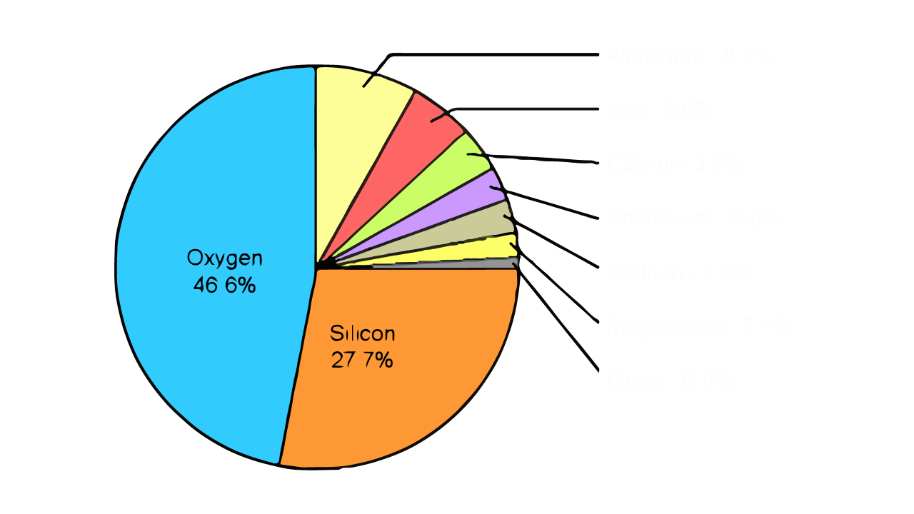

Contenido
Composición del suelo
El suelo es la parte más superficial de la corteza terrestre, con un espesor que varía desde unos pocos centímetros hasta dos o tres metros. Es en el sueo donde los reinos vegetal y animal establecen una relación íntima con el reino mineral. Los vegetales toman del suelo agua y nutrientes y los animales se comen a las plantas para obtener los elementos que necesitan. Los residuos de animales y vegetales vuelven al suelo, en donde se descomponen por la acción de microorganismos para dar de nuevo los productos originales.
Las partículas sólidas del suelo, formadas por minerales y por materia orgánica, dejan entre sí unos espacios vacíos o poros llenos de aire y de agua. Es deseable que los poros ocupen aproximadamente la mitad del volumen total del suelo y que el contenido máximo de agua sea el doble del volumen ocupado por el aire.
El oxígeno es el principal componente de la materia mineral, con un peso que suele sobrepasar la mitad del total. Otros elementos abundantes son: aluminio, hierro, potasio, calcio, magnesio y sodio. Todos los demás elementos que componen la parte mineral no sobrepasan el 1% del peso total.

La materia orgánica del suelo puede ser viva o muerta. La parte muerta está formada por restos de animales y de vegetales más o menos descompuestos por los microorganismos del suelo, que constituyen la parte viva del suelo. Cuando la materia orgánica se descompone por completo se liberan los elementos minerales contenidos en ella, quedando nuevamente a disposición de las plantas.
La formación del suelo
El suelo se origina a partir de la meteorización de las rocas, proceso mediante el cual son degradadas y descompuestas por diferentes agentes físicos, químicos y biológicos. Sobre la roca actúan en primer lugar los agentes físicos, especialmente los cambios de temperatura, la alternancia de humedad y sequedad y el hielo, que tienden a disgregar sus componentes, quedando como resultado el material original o parental del suelo, formado por unos granitos o partículas de roca muy pequeños que no han sufrido aún alteraciones internas con respecto a la roca basalEl material parental es alterado posteriormente por agentes químicos y biológivos, además de los procesos físicos que continúan disgregando las partículas. La transformación de este material parental es un proceso muy lento que va perfilando progresivamente el material del suelo. Más tarde, los materiales que ya constituyen el suelo sufren otras transformaciones que dan lugar a un suelo más desarrollado y más maduro. Observa el siguiente video.
Características físicas del suelo
La textura, la estructura, la porosidad, la densidad, la consistencia, el color y la temperatura son las características físicas que influyen más en el uso del suelo para los cultivos.La textura
Las partículas minerales del suelo cuyo tamaño es inferior a 2 milímetros constituyen la tierra fina. Atendiendo exclusivamente al tamaño de las partículas de la tierra fina, éstas se clasifican de la forma siguiente:
Arena: partículas cuyo tamaño está comprendido entre 2 y 0.05 milímetros.
Se llaman arenas gruesas las comprendidas entre 2 y 0.2 milímetros y arenas finas las
comprendidas entre 0.2 y 0.05 milímetros.
Limo: partículas cuyo tamaño está comprendido entre 0.05 y 0.002 milímetros.
Arcilla: partículas con tamaño inferior a 0.002 milímetros.
Se denomina textura del suelo a la proporción relativa de arena, limo y arcilla que posee. Según la textura, los suelos se clasifican de la siguiente forma:
Textura fina o arcillosa: en estos suelos predomina la arcilla. Son
adherentes, poco aireados, muy difíciles de labrar y retienen gran cantidad de agua.
textura arenosa: predomina la arena. Son suelos poco cohesivos, de fácil
labranza, con buena aireación para el desarrollo de las raíces y poco poder
retentivo de la humedad.
textura limosa: tienen un contenido alto de limo. Son suelos poco estables
y, por tanto, sensibles a los agentes de degradación.
Textura franca: estos suelos contienen una mezcla de arena, limo y arcilla
en proporción equilibrada, de tal modo que presentan las buenas cualidades de cada
una de las tres fracciones. Los suelos francos contienen menos proporción e arcilla
que de arena y de limo, ya que las propiedades de la primera se expresan con mayor
intensidad que las otras dos proporciones.
El contenido de materia orgánica no influye en la denominación de la textura, salvo que existan cantidades superiores al 20 %, en cuyo caso el suelo se llama suelo orgánico.
Determinación rápida de la textura
La textura se determina en laboratorio, mediante análisis granulométrico. Cuando se quiere una apreciación rápida y aproximada se procede de la siguiente forma: se coge un poco de tierra y se amasa con un poco de agua hasta que adquiere una consistencia semejante a la del mortero de cementoque se utiliza para unir ladrillos. Se coloca entre las manos un poco de esta tierra, se intenta formar con ella un cordón delgado y se observa su comportamiento:
La textura es arenosa cuando el cordón se rompe antes de conseguir formar uno de 3
milímetros de ancho.
La textura es arcillosa cuando se consigue formar un cordón de 3 milímetros de diámetro y
10 centímetros de longitud, y con el se puede construir un anillo sin que la tierra se
resquebraje.
La textura es franca si el cordón se rompe cuando se intenta formar uno de un milímetro de
diámetro, pero no se rompe cuando se hace uno de tres milímetros de diámetro. En el
siguiente video vemos un ejemplo de una prueba rápida de textura de suelo para determinar
el contenido de arena.
Estructura del suelo
Recibe el nombre de estructura del suelo la ordenación de sus partículas minerales individuales (arena, limo y arcilla) para formar otras unidades de mayor tamaño, que son los agregados. Estos agregados están formados por una agrupación de partículas de arena, limo y arcilla enlazadas o cementadas por materia orgánica y compuestos minerales.Un trozo de suelo se fragmenta con la mano, sin gran esfuerzo, en trozos más pequeños. Estos, a su vez, se dividen en otros más pequeños y así sucesivamente, hasta que se llega a unos trozos muy resistentes que ya no se fragmentan más que con un esfuerzo mayor. Estos últimos elementos son los agregados, que se dan y persisten en el suelo de una forma natural, a diferencia de otros elementos causados por alteraciones artificiales, como son los terrones, producidos por labores efectuadas bajo ciertas condiciones.